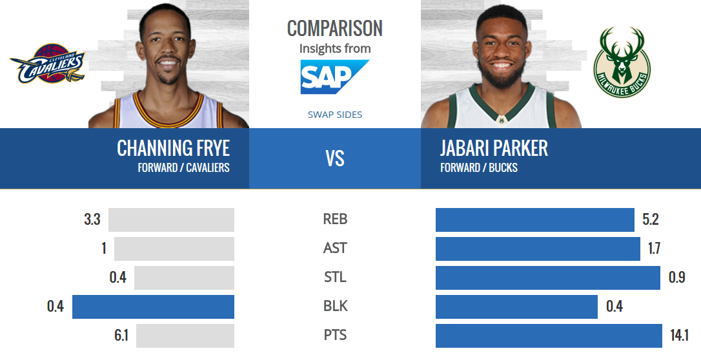
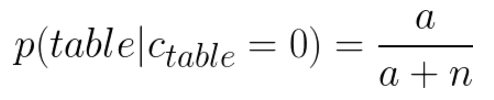

class: center, middle # Defensive Player Classification in Basketball ### Authors: Neil Seward --- # Contents 1. Motivation 2. Offensive Player Classification 3. Attempts at Defensive Player Classification 4. Data 5. Gaussian Mixture Models 6. Clustering Methods 7. Results 8. Future Works (Disruption and Volumetric Score) 9. Conclusion --- # Motivation - Professional basketball teams need a form of evaluation that accurately depicts playing styles. <br> <br> - It is not wise to evaluate players in basketball purely on their box scores. <br> <br> - Box scores are not descriptive enough to showcase different play styles across players. --- # Motivation  --- # Motivation --- # Motivation --- # Offensive Player Classification - Efforts in the past have largely been focused on offensive skillsets. <br/> <br/> - Past classification research has used a variety of advanced statistics that help fill gaps that box scores cannot fill. <br/> <br/> --- # Offensive Player Classification ### Metrics Used 1. Percent of assists on field goals made 2. Assists per possession 3. Turnovers per possesion 4. Defensive rebound rate 5. Offensive rebound rate 6. Zone shooting --- # Offensive Player Classification - Using traditional clustering methods like k-means, accurate descriptions of offensive play style can be made. --- # Offensive Player Classification --- # Defensive Player Classification Attempts - One of the major areas of research within the basketball analytic community has been quantifying defensive skill. <br> <br> - Early classification of players used metrics that largely focused on offensive performance. <br> <br> - Measuring defensive impact is much harder to do than measuring offensive impact. --- # Defensive Player Classification Attempts - One attempt at defensive player classification was using closest defender during time of shot to estimate defensive shooting percentage. - Although the idea of tracking defenders of shots is a good idea for defensive measurement, it can present bias. --- # Defensive Player Classification Attempts - The closest player at time of shot is not always the player that was actually guarding the player. <img src="img/guarding-player.jpg" style="width: 700px; height: 400px"/> --- # Defensive Player Classification Attempts --- # Data - Available data has exploded over the past four years with the introduction of SportVU cameras within arenas. - SportVU cameras track the XY positions of all ten players on court, as well as the XYZ positions of the ball for 25 frames per second. <img src="img/GSWatPORnocommentary.gif" style="width: 650px; height: 350px"/> --- # Data - Recently, the NBA has released advanced defensive metrics that allow researchers the ability to gain advanced insight into play styles on defense. These metrics include: 1. Contested shots 2. Deflections 3. Loose ball recovered 5. Opponent field goal percentage by zone <br> <br> <br> ??? Along with these, traditional metrics will be used. --- # Data ### Normalizing Metrics - Because not all players play the same amount of time in a game, the metrics need to be distributed over a set time period. <br> <br> - Each metric is calculated per 40 minutes. <br> <br> - Each metric is normalized to it's respective means. <br> <br> - Blocks and contest metrics need to be compared to the number of field goal attempts made. --- # Gaussian Mixture Models - In the defensive classification model, the number of defensive positions cannot be assumed. <br> <br> - In clustering, when the number of clusters is not known, Gaussian Mixtures and the Expectation Maximization algorithm can be used to find the optimal number of clusters. ??? # Gaussian Mixture Models https://www.youtube.com/watch?v=qMTuMa86NzU http://scikit-learn.org/stable/modules/mixture.html http://www.kyb.tue.mpg.de/fileadmin/user_upload/files/publications/pdfs/pdf2299.pdf --- # Gaussian Mixture Models ### Chinese Restaurant Process - A chinese restaurant has an infinite amount of tables for customers to be seated at. ??? # Expectation Maximization https://www.youtube.com/watch?v=qMTuMa86NzU http://scikit-learn.org/stable/modules/mixture.html#expectation-maximization http://cs229.stanford.edu/notes/cs229-notes8.pdf https://www.cs.princeton.edu/courses/archive/fall07/cos597C/scribe/20070921.pdf --- # Gaussian Mixture Models ### Chinese Restaurant Process Rules: 1. The first customer always sits at the first table. 2. The ***n + 1*** customer has two options: - Sit on the first unoccupied table with probability  - Sit at an occupied table with probability ??? - Chinese Restaurant Example https://www.cs.princeton.edu/courses/archive/fall07/cos597C/scribe/20070921.pdf --- # Gaussian Mixture Models ### Chinese Restaurant Process - ***a*** is the dispersion value of the restaurant population distribution over the entirety of the populated tables. - ***a*** can be used as a probability distribution of a **mixture** of probability functions. - Each probability distribution would represent each **table** in the restaurant. --- # Gaussian Mixture Models - A convex function can be created to represent the join probability functions in a mixture. - These probability functions represent the potential defensive clusters that players can be in. <img src="img/mixture-probabilities.png" style="width: 700px; height: 350px"/> --- # Gaussian Mixture Models - As points are assigned to clusters, weights associated with the distribution of the clusters are updated and factored into the convex function under a process called ***Expectation Maximization***. <img src="img/em-weights.gif" style="width: 700px; height: 400px"/> --- # Gaussian Mixture Models - The distribution weights will be updated untill convergence. <img src="img/em-new-cluster.gif" style="width: 600px; height: 425px"/> --- # Defensive Player Classification Using these metrics: 1. Contested 2 Point Shots VS 2 Point Shot Attempts 2. Contested 3 Point Shots VS 3 Point Shot Attempts 3. Blocked Shots VS All Shot Attempts 4. Deflections 5. Steals 6. Loose Balls Recovered 7. Defensive Rebounds 8. Average Speed on Defense --- # Defensive Player Classification - The Gaussian Mixture Model found that 5 clusters of defensive player types were optimal --- # Defensive Player Classification After clustering, five defensive playing types are present: 1. Elite Rim Protecter (Andrew Bogut) 2. Rim Protector (Lamarcus Aldridge) 3. Elite Wing Defender (Kawhi Leonard) 4. Perimeter Defender (Klay Thompson) 5. Ball Thief (Kyrie Irving) ??? 1. High block per shot, high defensive rebound rate, high contest in paint 2. Contest two and three higher than average, bit faster on defense. 3. Fast on defense, high steal and deflections, high contest on 3 pt shot, gets drebs. 4. Contests three point shots and that's about it 5. Steals ball, recovers loose balls, gets deflections (all not at elite level though) --- # Defensive Player Classification --- # Future Works ### Advanced Defensive Metrics To gain a better insight into how well players guard during their possession, volumetric and disruption scores can be used. - **Volumetric Score**: ability to alter the frequency of an opponent's shot against exptected frequency - **Disruption Score**: ability to alter the shooting percentage of opponent's shot against expected percentage --- # Future Works ### Advanced Defensive Metrics - Using these two metrics, defensive shots charts can be created. --- # Future Works ### Advanced Defensive Metrics - These metrics allow researchers to quantify exactly how bad a defender is, and pinpoint their weak and strong areas. --- # Conclusion - Previous player classifications ignored defensive skills in evaluations. <br> <br> - Gaussian Mixture Models are useful at estimating number of clusters in mixed probability distributions. <br> <br> - Unrelated defensive skills should be evaluated seperately to eliminate sparsity in cluster distributions. <br> <br> - The defensive metrics collected over the playoffs allow a clear description to be made for defensive evaluations. --- # References [1] http://www.ee.iisc.ac.in/people/faculty/prasantg/downloads/GMM_Tutorial_Reynolds.pdf [2] http://nyloncalculus.com/2015/09/29/nba-positions-by-clustering/ [3] http://www.sloansportsconference.com/wp-content/uploads/2012/02/44-Lutz_cluster_analysis_NBA.pdf [4] https://www.cs.princeton.edu/courses/archive/fall07/cos597C/scribe/20070921.pdf